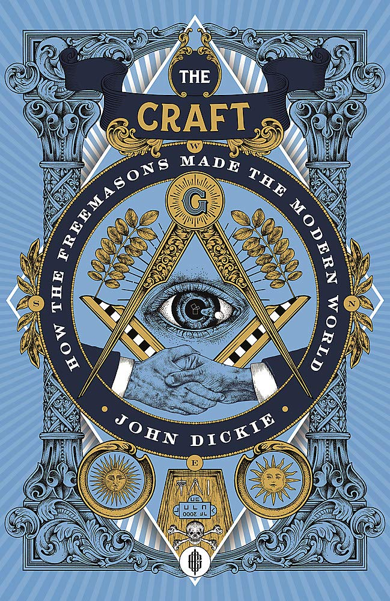
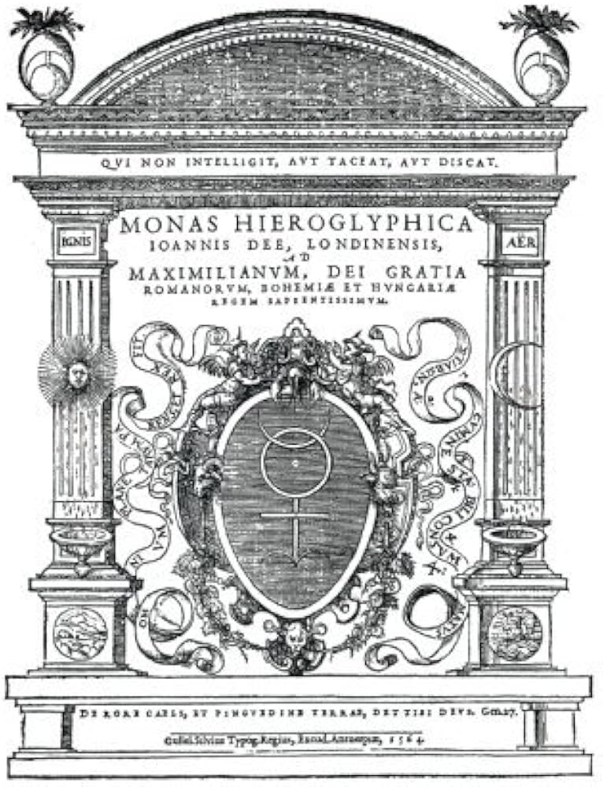
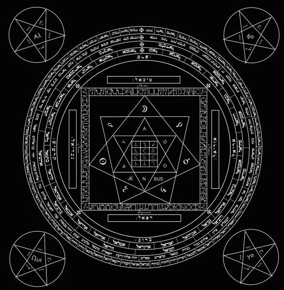
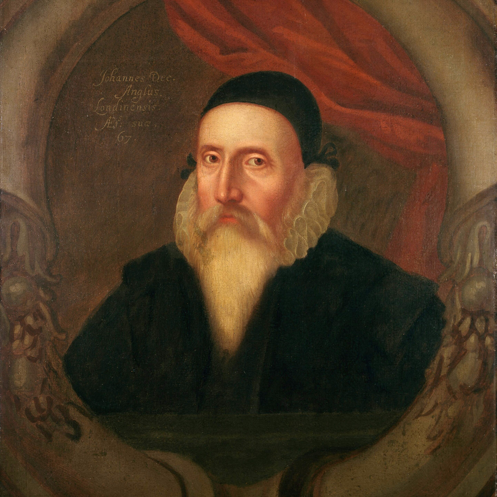

The OccultThe occult, a word that comes from the Latin occultus, meaning "hidden" or "secret," covers a wide range of practices, beliefs, and groups that engage with the mystical, supernatural, and esoteric sides of life. As someone deeply rooted in Christian theology and well-versed in the Bible, including the apocryphal texts, I’ve become increasingly concerned about how occult symbols and the worship of false gods and goddesses are everywhere around us. This page will focus on the origins and root causes of these practices, exploring how the occult is weaving itself into our everyday lives, from politics and the entertainment industry to modern religions and even our personal choices like tattoos and idol purchases. Origins of the OccultThe origins of occultism can be traced back to ancient civilizations where mystical practices and esoteric knowledge were deeply embedded in religious and societal structures. In ancient Egypt, Mesopotamia, and Greece, priests and scholars conducted rituals and studies aimed at understanding the hidden forces that govern the universe. These early occult practices were often intertwined with mainstream religion, laying the foundation for future esoteric traditions that would evolve over centuries. During the medieval period, occultism developed alongside the dominant Christian faith, with alchemy, astrology, and magic emerging as prominent fields of study. These practices were frequently pursued in secrecy due to their perceived heretical nature, as the Church sought to suppress any teachings that deviated from orthodox Christianity. The Renaissance took occultism to new heights. Famous figures like Johannes Kepler and Isaac Newton weren’t just scientists; they were also involved in alchemy and mystical studies (Hanegraaff, 2013). This era showed how the pursuit of hidden knowledge could go hand-in-hand with scientific progress, even though it also planted the seeds for future clashes between faith and esoteric beliefs. Occultism has branched into various schools of thought, each with its own focus. Hermeticism, for example, is all about seeking direct knowledge of the divine through practices like alchemy and astrology (Hanegraaff, 2004). Theosophy, started by Helena Blavatsky in the late 19th century, tries to find a common thread among all religions, philosophies, and sciences, pushing for spiritual growth and enlightenment by blending Eastern religions, mysticism, and esoteric traditions (Goodrick-Clarke, 2004). Then there’s ritual magic, which involves structured ceremonies and symbolic acts to invoke spiritual entities or bring about change in the physical world. The Hermetic Order of the Golden Dawn and the works of Aleister Crowley are prime examples of this (Drury, 2000). The Hermetic Order of the Golden Dawn, founded in the late 1800s by William Robert Woodman, William Wynn Westcott, and Samuel Liddell MacGregor Mathers, was a key player in reviving Western occultism. They took a systematic approach to magical practices, mixing Hermeticism, Kabbalah, and tarot (Drury, 2000). The Golden Dawn didn't just influence its members; it impacted various occult and esoteric movements. Notable members included Aleister Crowley, who later started his own influential order, and the famous poet W.B. Yeats. The Golden Dawn’s structured rituals and teachings still shape modern occult practices today, showing just how lasting their legacy is. 
Aleister Crowley is one of the most well-known figures in occult history, and his story is a perfect example of how personal ambition can intertwine with esoteric pursuits. Born in 1875 into a devout Christian family, Crowley’s spiritual journey took a sharp turn when he got involved in occult studies and esoteric traditions (Crowley, 2011). Taking on the title "The Beast," Crowley rejected traditional morality in favor of pursuing his personal will and liberation. His personal journals reveal his disillusionment with Christianity and his shift towards darker, more independent spiritual paths (Crowley, 2011). Crowley’s rituals, like those in The Book of the Law and Magick in Theory and Practice, focused on finding one’s true will through ceremonial magic. These practices often included complex symbols, calling upon spiritual entities, and exploring altered states of consciousness, blurring the lines between enlightenment and moral downfall (Crowley, 2011). Secret societies have always been linked with occultism, acting as channels for esoteric knowledge and subtly influencing society from behind the scenes. Take Freemasonry, for example. This fraternal organization, which started from medieval stonemasonry guilds, incorporates elements of Hermeticism and other mystical traditions in its rituals and stories. This creates a network of influential people across different areas, spreading occult symbols and esoteric knowledge (Preuss, 2007). Then there’s Rosicrucianism, which began in the early 1600s. It combines alchemy, Hermeticism, and Christian mysticism, aiming for spiritual enlightenment and societal transformation through hidden wisdom (Hanegraaff, 2004). The Illuminati, founded in 1776 by Adam Weishaupt, wanted to promote Enlightenment ideas and fight against religious and political oppression. Although the Illuminati didn’t last long, it’s still a hot topic in modern conspiracy theories that link secret societies to global control and occult practices (Robinson, 2011). John Dee is a great historical example of how science and occultism can mix. As a prominent English mathematician, astronomer, and advisor to Queen Elizabeth I, Dee started off with a strong Christian background and pursued traditional scholarly work, believing that science and religion could coexist harmoniously (Clucas, 2003). But his thirst for knowledge and power led him to alchemy, divination, and angelic communication, working with the occultist Edward Kelley to uncover hidden truths and understand God’s will through mystical practices (Clucas, 2003). Dee’s obsession with wealth and power blinded him, making him chase material gains through alchemy. His partnership with Kelley, who claimed to communicate with angels, ended in deception and disappointment, as the promises of wealth and enlightenment never materialized (Clucas, 2003).  On the other hand, Jack Parsons, an American rocket scientist who was instrumental in developing rocket propulsion, shows how occultism and scientific innovation can intersect in modern times. Parsons was fascinated by occultism and became a follower of Aleister Crowley, diving into ceremonial magic and Thelema (Parsons, 2011). Together with fellow occultist Phyllis Seckler, Parsons conducted the Babalon Working—a series of rituals meant to invoke the goddess Babalon and usher in a new spiritual age. These ceremonies mixed Thelemic principles with Crowley’s magical theories, trying to bring Crowley’s vision of a free humanity to life (Parsons, 2011). Parsons’ life even touched politics when his daughter married a future U.S. president, linking occult practices to political power structures. His work in both rocketry and occultism highlights the complicated relationship between scientific progress and hidden esoteric beliefs (Parsons, 2011). Looking at John Dee and Aleister Crowley side by side shows how people can see the occult in different lights. Today, John Dee is often seen in New Age circles as a trailblazer who tried to connect science and spirituality, celebrating his quest for knowledge and his attempts to communicate with higher realms as noble and enlightening (Clucas, 2003). In contrast, Aleister Crowley is often viewed as the "bad boy" of the occult—rebellious, associated with dark magic, and hedonistic. His bold personality and controversial practices have made him a symbol of the occult’s darker side (Crowley, 2011). This comparison highlights the tension within occultism between seeking enlightenment and falling into corruption, showing how the same figure can be admired and condemned based on different perspectives (Hanegraaff, 2004). Occultism doesn’t just stay in the past; it still influences many areas of our lives today, especially religion, politics, and entertainment. In religion, occultism challenges and sometimes complements established beliefs. Movements like Theosophy and modern paganism mix esoteric beliefs with traditional doctrines, while secret societies within religious institutions try to exert hidden influence over spiritual and doctrinal matters (Goodrick-Clarke, 2004). Politically, occultism intersects with power structures through secret societies like the Freemasons and the Illuminati, which are often accused of secretly controlling political decisions and societal norms. Prominent political figures with occult ties fuel conspiracy theories that link occult practices to governance and policy-making (Robinson, 2011). In the entertainment industry, occult symbols are everywhere—in music videos, Hollywood movies, and popular culture. From pentagrams in music videos to occult references in blockbuster films, these symbols make esoteric beliefs seem normal and even attractive to a wide audience. Modern-day religions and spiritual movements often blend in occult elements, making it hard to distinguish between genuine faith and hidden esoteric practices. This mix can create belief systems that include both traditional religious elements and occult symbols, making it difficult to tell what is true worship and what is deceptive practice (Goodrick-Clarke, 2004). Even everyday actions like getting tattoos or buying idols and symbols can be influenced by occult beliefs. These activities often involve adopting symbols linked to false gods and spiritual entities, unintentionally aligning individuals with occult practices and beliefs. The widespread use of occult symbols in daily life shows how subtly the occult can infiltrate and influence believers, often without them even realizing it. The idea that occultism leads to corruption is supported by the observation that engaging in occult practices usually means chasing power, wealth, and personal satisfaction. The temptation to tap into hidden forces can push people to put their own desires above ethical considerations, creating environments where corruption can thrive (Crowley, 2011). Moreover, the belief that occult practitioners become vessels for malevolent forces suggests that their quest for power and knowledge makes them vulnerable to manipulation by demonic or dark entities. This can result in unethical behavior, exploitation, and moral decline, aligning the practitioner's will with dark agendas (Hanegraaff, 2004). Case studies like Aleister Crowley, who indulged in hedonistic pursuits and personal will leading to controversial practices and a reputation for malevolence, and Jack Parsons, whose involvement in the Babalon Working and political connections show how occultism can mix with power structures, reinforce this argument (Parsons, 2011; Crowley, 2011). Reflection |